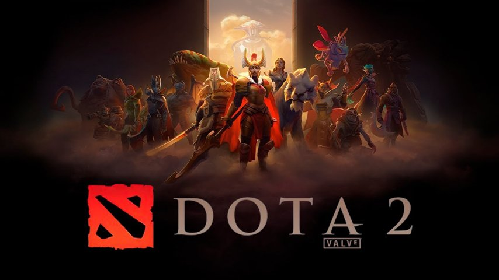

CS 2
CS 2 – комп'ютерна гра у жанрі шутера від першої особи, розроблена компанією Valve у 2023 році для платформ Microsoft Windows, Linux.

Dota 2
Dota 2, Defense of the Ancients (укр. Оборона стародавніх) — багатокористувацька відеогра в піджанрі MOBA, автономне продовження ідей карти DotA для гри Warcraft III: Reign of Chaos і її модифікації Warcraft III: The Frozen Throne.

Team Fortress 2
Team Fortress 2 (укр. Командна Фортеця 2) — багатокористувацька командна відеогра в жанрі шутера від першої особи, розроблена компанією Valve Corporation та випущена в 2007 році.